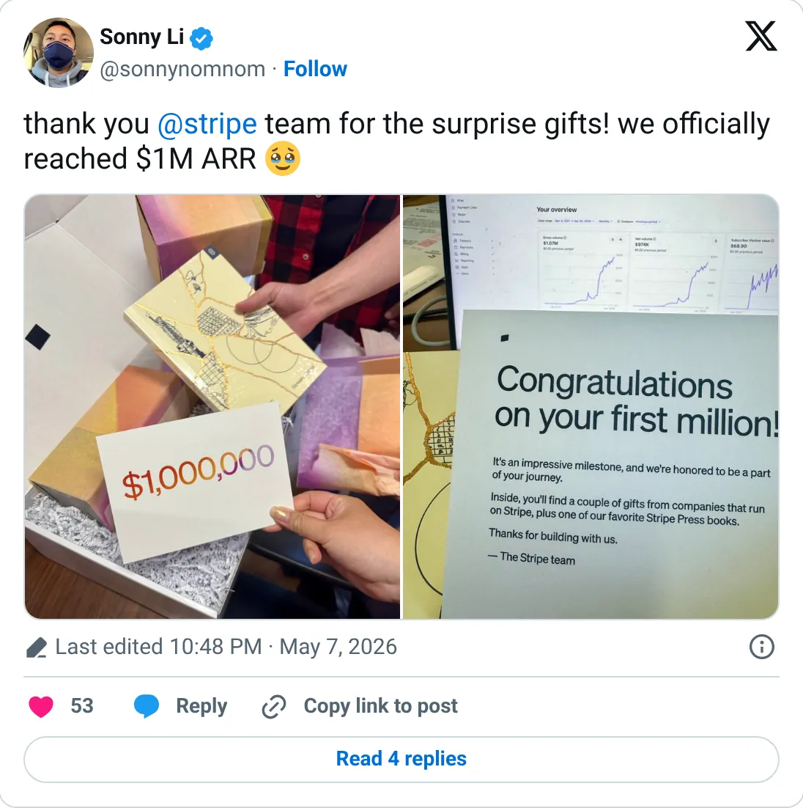

Not a pick
Codédex
The ledger looks real. It is not one of the clearer things to start next.
$85,022 MRR
Should you build this
The money looks real, and it is still not a recommendation to start a copy. Codédex reached a public “$1M ARR” post in May 2026, almost four years after the founder quit his job. TrustMRR on October 8 reads $85,022 MRR and 6,745 subscriptions, which annualizes to about $1.02M. The tweet and the processor are the same number. There is almost no earlier public trail, so you cannot see the shape of the climb. You can see that the milestone was not inflated past the billings.
Cited from the captured posts, shown below: the key post (May 7, 2026) is the source for “Reached $1M ARR almost 4 years after quitting his job”.
Posts this is based on

Reached $1M ARR almost 4 years after quitting his job
Open on X
What the product is
Gamified, retro-RPG-style platform for learning to code (Python, HTML/CSS, JS…) aimed at beginners.
⚠ Thin X timeline (one milestone post).